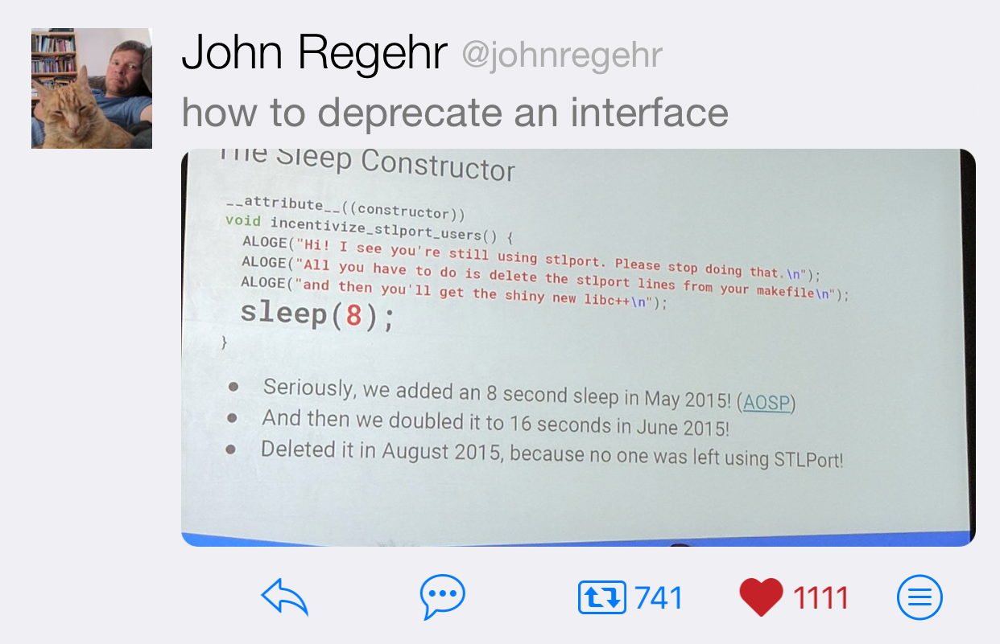

2019-01-10
A Perspective on C++ Standardization in 2018 by JeanHeyd Meneide
You can roll your fantastic thing in your engine / application / middleware / scientific package? Awesome! Now write a specification for it.
How to Initialize a String Member by B. Filipek
Making C++ cool again, bringing in those expressions from other languages that you wish you had; list comprehension style maps, filters, ranges, etc.
int total = lz::read<int>(ifstream("test.txt")) | lz::limit(10) |
lz::filter([](int i) { return i % 2 == 0; }) |
lz::map([](int i) { return i * i; }) | lz::sum();#include <iostream>
#include "enum.h"
BETTER_ENUM(Word, int, Hello, World)
int main()
{
std::cout << (+Word::Hello)._to_string() << ", "
<< (+Word::World)._to_string() << "!"
<< std::endl;
return 0;
}How to refurbish legacy code into a maintainable state by Jan Wilmans
C++, C# and Unity, by Lucas Meijer
Python:
C++:
std::vector<Thing> things;
...
for (auto [i, thing] : enumerate(things))
{
// i gets the index and thing gets the Thing in each iteration
}